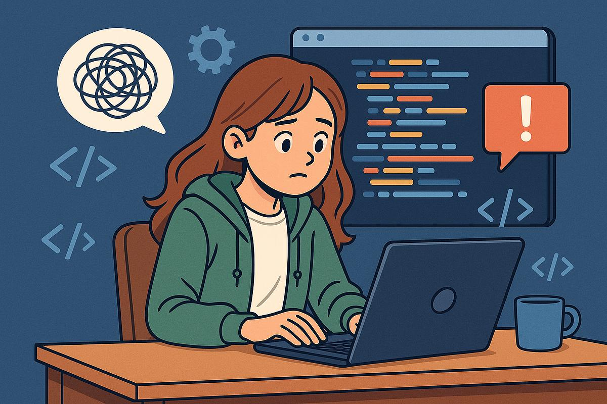
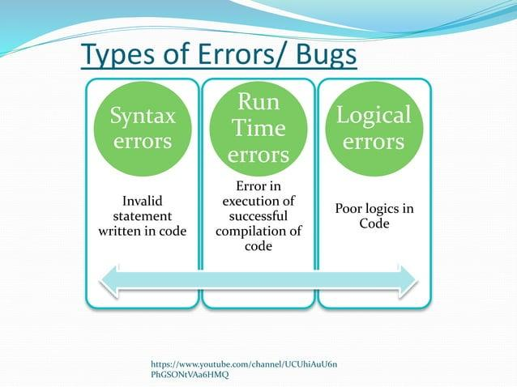

Introduction: Every Programmer Makes Mistakes
Every programmer, from beginners to experienced developers, faces errors. To finding and fixing these errors is called debugging is use.
Debugging is an important part of software development. It helps programmers understand how their code works, identify mistakes, and improve their problem-solving skills. Instead of feeling frustrated by errors, we can treat them as opportunities to learn something new.

Understanding Common Programming Errors
1. Syntax Errors
Syntax errors occur when we do not follow the rules of a programming language. For example, forgetting a semicolon in C++ or writing a command incorrectly can prevent a program from compiling. These errors are often easy to fix once we carefully read the compiler message.
2. Runtime Errors
Runtime errors happen while a program is executing. Examples include accessing an array outside its valid range or dividing an integer by zero. Such errors can stop a program unexpectedly. Checking input values and array indices can help prevent many runtime errors.
3. Logical Errors
Logical errors occur when a program runs but produces the wrong result. For example, using addition instead of multiplication in a calculation may give an incorrect answer without showing any error message. Testing the program with different inputs helps identify these mistakes.

Comparison of Programming Errors
| Type of Error | When It Occurs | Example |
|---|---|---|
| Syntax Error | During compilation | Missing semicolon |
| Runtime Error | During execution | Invalid array access |
| Logical Error | During program execution, producing an incorrect result | Using the wrong formula |
Tips for Better at Debugging
- Read the error message carefully.
- Check the line where the error is reported.
- Fix one problem at a time and test again.
Good Habits for Beginner Programmers
- Write clean and readable code.
- Use meaningful variable names.
- Understand your code instead of copying blindly.
- Practice coding problems regularly.
- Learn from mistakes instead of giving up.
Explore the given sites: MDN Web Docs
Conclusion: Errors Are Part of the Journey
Debugging is more than correcting mistakes. It teaches us logical thinking, and problem-solving. Every error gives us a chance to understand programming better. Even experienced developers make mistakes, but their ability to identify and solve problems improves with practice.
If you are a beginner, do not be afraid of red error messages or incorrect outputs. Read, test, think, and try again. Remember that becoming a good programmer is not about writing perfect code on the first attempt. It is about learning how to improve your code step by step.This consistancy will led to a you good programmer.
Keep coding, keep debugging, and keep learning!